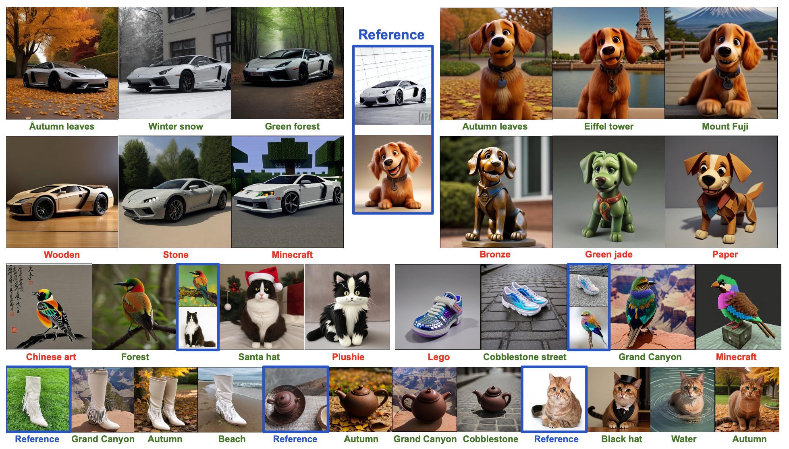

MoMA: Multimodal LLM Adapter for Fast Personalized Image Generation

In this paper, we present MoMA: an open-vocabulary, training-free personalized image model that boasts flexible zero-shot capabilities. As foundational text-to-image models rapidly evolve, the demand for robust image-to-image translation grows. Addressing this need, MoMA specializes in subject-driven personalized image generation. Utilizing an open-source, Multimodal Large Language Model (MLLM), we train MoMA to serve a dual role as both a feature extractor and a generator. This approach effectively synergizes reference image and text prompt information to produce valuable image features, facilitating an image diffusion model. To better leverage the generated features, we further introduce a novel self-attention shortcut method that efficiently transfers image features to an image diffusion model, improving the resemblance of the target object in generated images. Remarkably, as a tuning-free plug-and-play module, our model requires only a single reference image and outperforms existing methods in generating images with high detail fidelity, enhanced identity-preservation and prompt faithfulness. We commit to making our work open-source, thereby providing universal access to these advancements.
We present MoMA, a multimodal LLM adapter enhanced by fine-grained feature transfer. The overall architecture is demonstrated in Figure 2. Our method consists of three parts: (1) a generative multimodal decoder is utilized to extract image features from the reference image and edit it following the target prompt, yield the contextualized image feature; (2) in the meantime, we replace the back ground of the original image by white color, leaving only object pixels, leveraging the original UNet’s self-attention layers to extract the object image feature; finally, during the new image generation process, we injected the contextualized image features and the object image features into the UNet diffusion model with the dedicatedly trained context-cross-attention layers and object-cross-attention layers, respectively.
To achieve the best model performance, we propose a two-staged pre-training strategy. First, we propose a Multimodal Generative Learning Stage, where we pre-train the multimodal image-feature decoder such that it learns to compose image features of the subject with the target prompt and output the CLIP embedding of the target image. To this end, we need to take advantage of the generative capability of the MLLM: while initially trained to generate text, we adapt it to generate image embeddings.
We present qualitative examples to illustrate the effectiveness of our model. In Fig. 4, the target prompts specify a novel contextual environment. Our model seamlessly generates a high-quality background while precisely situating the same object within this new setting

In the following image, the prompts indicate a change in texture. Our model showcases its ability to render realistic textures in response to the textual cues, adeptly altering specified visual elements while leaving other identity aspects of the image unaffected..
Our technique can synthesized images with specified viewpoints for a subject cat (left to right: top, bottom, side and back views). Note that the generated poses are different from the input poses, and the background changes in a realistic manner given a pose change. We also highlight the preservation of complex fur patterns on the subject cat's forehead.
our model is an universal adapter because we freeze the original diffusion model in the training stage. It can generalize to the custom model checkpoints fine-tuned from the same base model. In Fig. 10, we verify this on community models from HuggingFace and CivitAi [8] including Realistic Vision V4.0 [2], ReV-Animated [31], Anything v4 [39] and Esthetic Retro Anime [22]. These models are all fine-tuned from SD v1.5. MoMA can be directly applied to these community models without any modification..

@article{ruiz2022dreambooth,
title={MoMA: new github page. test new branch},
author={Ruiz, Nataniel and Li, Yuanzhen and Jampani, Varun and Pritch, Yael and Rubinstein, Michael and Aberman, Kfir},
booktitle={arXiv preprint arxiv:2208.12242},
year={2022}
}
Acknowledgements: We thank Rinon Gal, Adi Zicher, Ron Mokady, Bill Freeman, Dilip Krishnan, Huiwen Chang and Daniel Cohen-Or for their valuable inputs that helped improve this work, and to Mohammad Norouzi, Chitwan Saharia and William Chan for providing us with their support and the pretrained models of Imagen. Finally, a special thank you to David Salesin for his feedback, advice and for his support for the project.